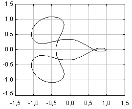

Arenstorf orbitsArenstorf orbits are closed trajectories of the restricted three-body problem. That is, two bodies of masses µ and 1-µ moving in a circular rotation, and a third body of negligible mass moving in the same plane. The computation of these orbits is very sensible to small errors and are a good test for the accuracy of numerical methods for solving Ordinary Differential Equations. |
 |
This simulation compares the solution of two of these orbits using both a 4th-order fixed step and a 5(4) variable step Runge-Kutta algorithm. The adaptive solver uses an event to find the period of the orbit and stop there. Both the computations of the adaptive solver and the event are done with the step size and the tolerance indicated.
The middle row of fields at the bottom of the window shows the computed values, while the lower one shows the expected values.